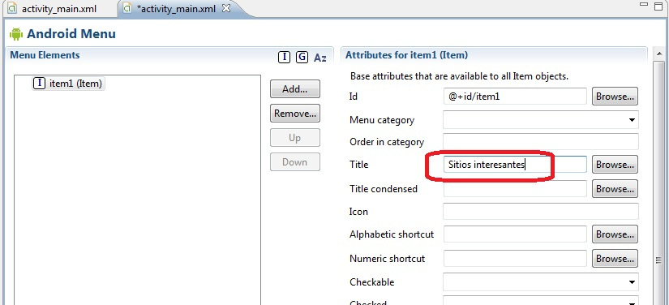
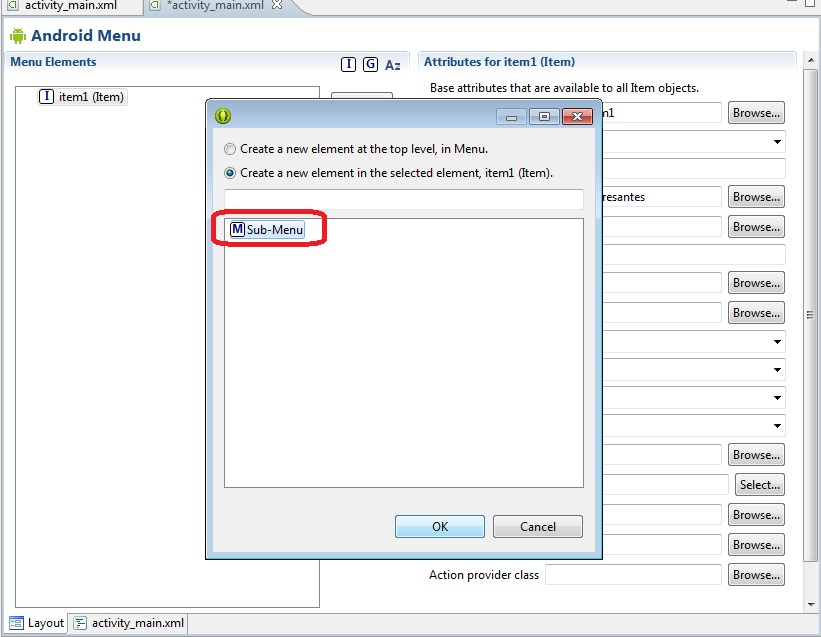
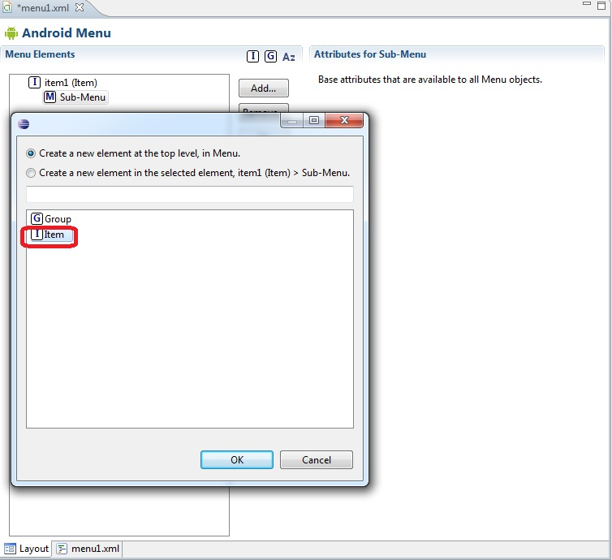
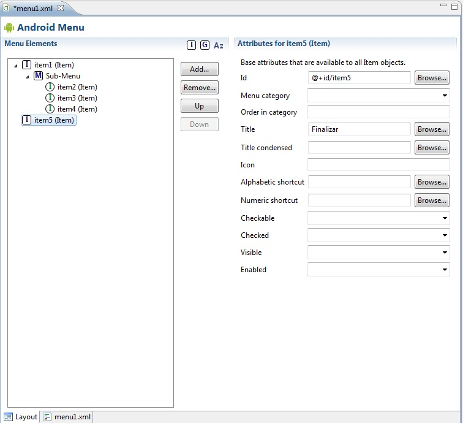
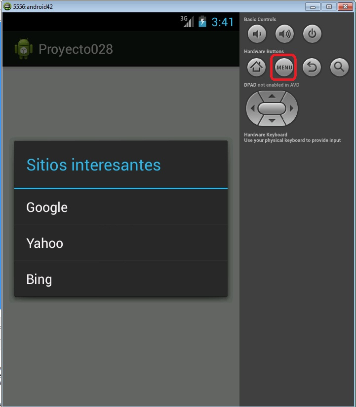

30 - Menú de opciones con submenúYa se encuentra disponible el nuevo tutorial para aprender android con el nuevo entorno Android Studio propuesto por Google y que remplaza a Eclipse. |
Ahora veremos que podemos desplegar un submenú cuando se selecciona una opción del menú principal.
Confeccionar una aplicación que muestre un menú con dos opciones: una que visualice el texto "Sitios interesantes..." y al ser seleccionado muestre otro submenú con una serie de buscadores. y otra opción en el menú principal para que finalice el programa.
Modificaremos el archivo activity_main.xml de la carpeta res/menu. Podemos eliminar el item que crea por defecto el ADT (menu_settings(Item)
Primero insertamos un item que mostrará el mensaje "Sitios interesantes..." para esto presionamos el botón "Add" y seleccionamos "Item" en Title disponemos "Sitios interesantes..."
Presionamos "Add" y seleccionamos "Sub-Menu":
Luego añadimos varios Menu Item al Sub-Menu (uno por cada sitio web a enlazar):
La estructura final del menú de opciones debe ser la siguiente:
El código fuente de la clase Proyecto028Activity.java es:
package com.androidya.proyecto028;
import android.app.Activity;
import android.content.Intent;
import android.net.Uri;
import android.os.Bundle;
import android.view.Menu;
import android.view.MenuItem;
public class MainActivity extends Activity {
@Override
protected void onCreate(Bundle savedInstanceState) {
super.onCreate(savedInstanceState);
setContentView(R.layout.activity_main);
}
@Override
public boolean onCreateOptionsMenu(Menu menu) {
// Inflate the menu; this adds items to the action bar if it is present.
getMenuInflater().inflate(R.menu.activity_main, menu);
return true;
}
@Override
public boolean onOptionsItemSelected(MenuItem item) {
Intent i;
switch (item.getItemId()) {
case R.id.item2:
i = new Intent("android.intent.action.VIEW",
Uri.parse("http://www.google.com"));
startActivity(i);
break;
case R.id.item3:
i = new Intent("android.intent.action.VIEW",
Uri.parse("http://www.yahoo.com"));
startActivity(i);
break;
case R.id.item4:
i = new Intent("android.intent.action.VIEW",
Uri.parse("http://www.bing.com"));
startActivity(i);
break;
case R.id.item5:
finish();
}
return true;
}
}
El método onCreateOptionsMenu es idéntico al concepto anterior. En el método onOptionsItemSelected verificamos cual de los MenuItem es seleccionado y procedemos a invocar mediante un Intent al navegador configurado por defecto para el dispositivo.
La visualización del submenú en tiempo de ejecución es similar a:
Este proyecto lo puede descargar en un zip desde este enlace: proyecto028.zip